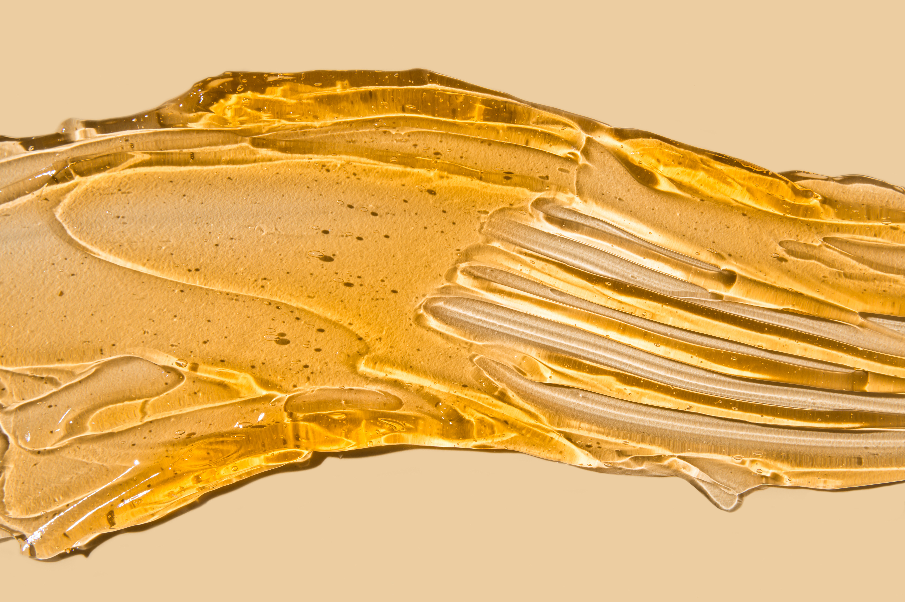

Parafínové zábaly
Parafínová lázeň působí blahodárně zejména na suchou a popraskanou pokožku, kterou vyživuje, zvlhčuje a zjemňuje.
Parafín používaný pro zábaly je speciální vosk, který se používá k léčebným i kosmetickým účelům a vyniká svou úžasnou schopností zadržovat teplo. Může být obohacený o vitamín E. Při aplikaci na kůži při teplotě 52-62°C pozvolna prohřívá a prokrvuje danou oblast, uvolňuje tkáně, prohřívá svaly, uvolňuje ztuhlé a bolestivé klouby, zlepšuje krevní oběh, otevírá póry, změkčuje také ztvrdlou kůži a zklidňuje nervovou soustavu.
Póry pak lépe vstřebávají hydratační a vyživující složky obsažené v parafínu.

Během působení parafínu dochází k uvolnění svalů a kloubů a právě proto se parafínové zábaly používají jako součást rehabilitační léčby, zejména pak při degenerativním onemocnění kloubů rukou.
Jedná se v podstatě o lokální termoterapii (léčbu teplem).
Ruce se ponoří do lázně s teplým parafínem a vosk okamžitě přilne k pokožce. Následně se ruce zabalí do plastikových rukavic a parafín se nechá působit.
Výsledkem procedury je hydratace a zvýšená elasticita pokožky.
Parafínový zábal rukou se doporučuje při chronickém revmatoidním onemocnění a chronickém revmatickém onemocnění drobných kloubů rukou, tedy artróze.